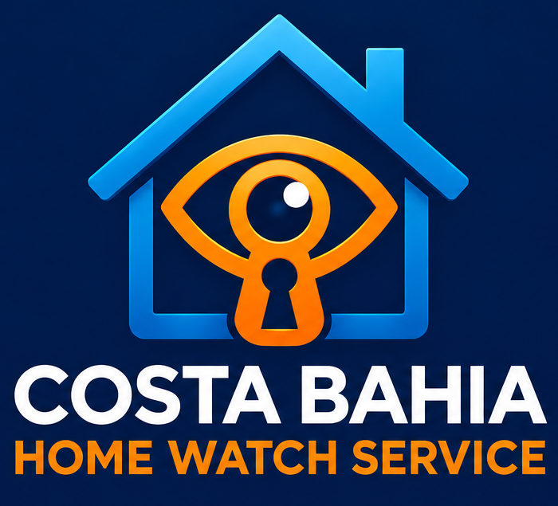
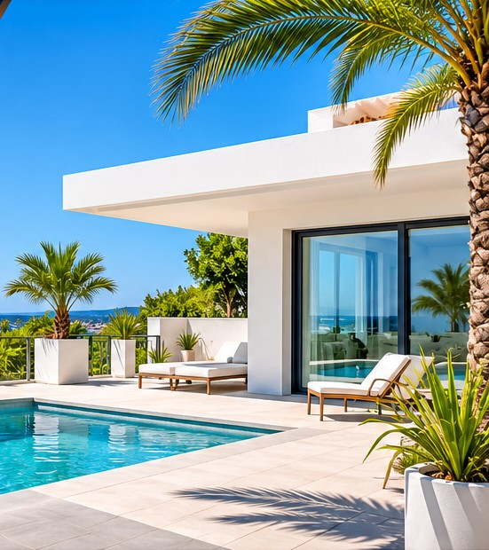

Custodia de llaves
Conservación y gestión responsable de llaves para accesos autorizados.

Supervisión y cuidado de segundas residencias en la Costa Blanca Sur.

Santa Pola, Gran Alacant, Alicante, Guardamar y poblaciones cercanas. Consulta la disponibilidad para tu localidad.
Un servicio de supervisión y apoyo pensado para propietarios de segundas residencias.
Conservación y gestión responsable de llaves para accesos autorizados.
Visitas periódicas, ventilación y revisión visual del estado de la vivienda.
Detección de incidencias y coordinación de pequeñas reparaciones y profesionales.
Coordinación de limpieza y puesta a punto antes de tu llegada.
Recogida de correo y avisos relevantes durante tu ausencia.
Revisiones de accesos y comunicación de señales de posibles incidencias.
Una forma sencilla de mantenerte al tanto del estado de tu vivienda.
Acordamos las visitas y tareas adecuadas a tu vivienda.
Realizamos las comprobaciones y documentamos las visitas.
Puedes consultar la información disponible en tu área privada.
Cuidamos cada vivienda con seriedad, discreción y compromiso. Trabajamos con método y prestamos atención a esos pequeños detalles que marcan la diferencia.
«No nos limitamos a comprobar que todo está bien. Nos preocupamos por descubrir aquello que podría dejar de estarlo».
Observamos lo que puede pasar desapercibido para anticipar posibles incidencias.
Tratamos cada vivienda con el cuidado y el respeto que merece.
Seguimos comprobaciones planificadas y documentamos nuestras visitas.
Informamos de forma clara y aportamos fotografías de las revisiones.
Tres opciones de seguimiento periódico, adaptadas a diferentes necesidades.
Tarifas orientativas, sujetas a confirmación según vivienda y ubicación. No incluyen limpieza de piscina, tratamientos del agua, jardinería, reparaciones ni otros trabajos especializados, que se presupuestan aparte.
Servicios puntuales bajo presupuesto, independientes de los planes mensuales.
Coordinación de limpieza y puesta a punto.
Facilitamos el acceso autorizado y coordinamos intervenciones.
Visitas adicionales tras episodios de lluvia o viento, según disponibilidad.
Comprobaciones y coordinación de servicios previos a tu estancia.
Santa Pola, Gran Alacant, Alicante, Guardamar y poblaciones cercanas. Consulta la disponibilidad para tu localidad.
Escríbenos para consultar disponibilidad, solicitar información sobre nuestros planes o pedir un presupuesto.
Contactar por emailAccede a tu área privada para consultar la información de tus viviendas y visitas.
Entrar al área clientes ↗